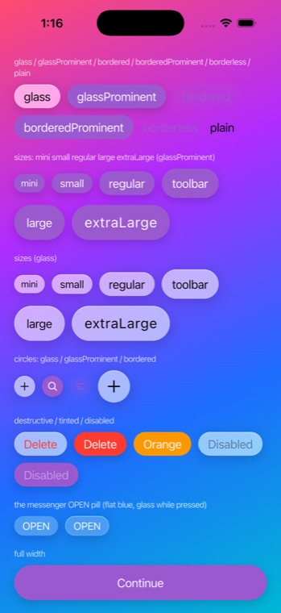
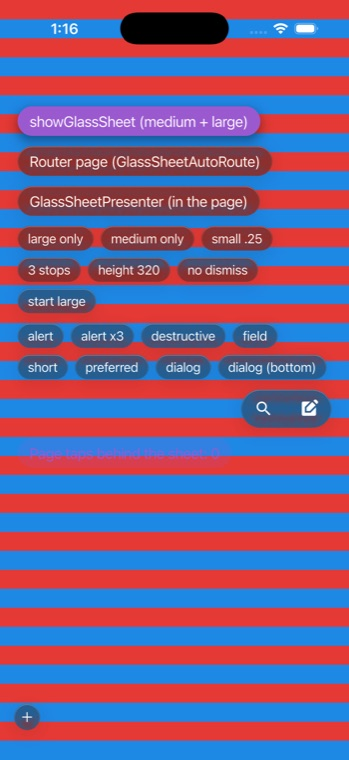
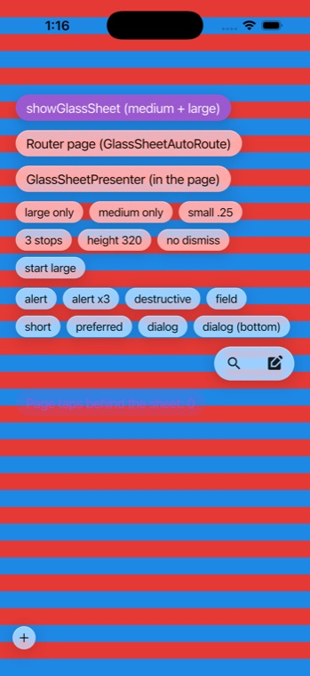
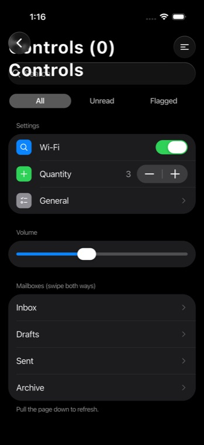
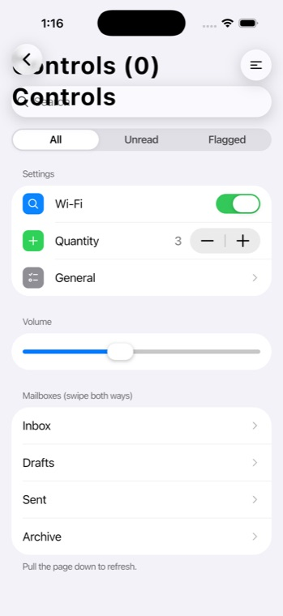

swiftuikit
UI-кит для Flutter в стиле iOS 26. «Жидкое стекло» на шейдерах Impeller, прогрессивный блюр под барами, листы с детентами, нативные меню и диалоги.








Что это
swiftuikit — набор виджетов, которые выглядят и ведут себя как iOS 26: стекло с преломлением на краю (LiquidGlass), бары, под которыми контент уходит в размытие (ChromeScaffold), плавающий таб-бар, листы (GlassSheet), меню и алерты. Размеры, пружины и затухания сняты с нативных приложений покадрово.
Стекло рисуется фрагментным шейдером на Impeller. На Flutter Web и без Impeller (flutter test) оно заменяется плоской подложкой, поэтому внешний вид в этой документации — реальные снимки с iOS-симулятора.
Установка
dependencies:
swiftuikit:
path: ../swiftuikit # или git: urlimport 'package:swiftuikit/swiftuikit.dart';Запуск приложения
Шейдеры нужно загрузить до runApp — тогда первое стекло не мигает:
Future<void> main() async {
WidgetsFlutterBinding.ensureInitialized();
await preloadRavelUiKit(); // ProgressiveBlur, LiquidGlass, ContentLens + прогрев клавиатуры iOS
await ScreenRadiusService.instance.initialize(); // радиус скругления экрана (для листов)
runApp(const MyApp());
}
class MyApp extends StatelessWidget {
const MyApp({super.key});
@override
Widget build(BuildContext context) => SwiftUiApp(
themeMode: ThemeMode.system,
theme: SwiftUiThemeData.light(),
darkTheme: SwiftUiThemeData.dark(),
home: const HomePage(),
);
}Темы
SwiftUiThemeData — это цвета, типографика, метрики, параметры стекла и эффект краёв баров. Читается через SwiftUiTheme.of(context); подробности — в гайде «Тема и цвета».
final t = SwiftUiTheme.of(context);
Container(color: t.colors.background, child: Text('Hi', style: t.typography.body));Тема самого сайта переключается кнопкой ◐ справа сверху; скриншоты виджетов подбираются под неё.